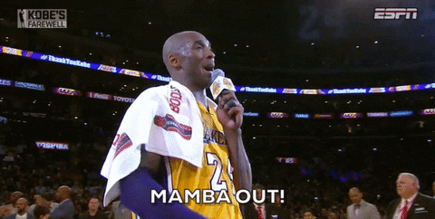

Thank you Kobe
Today Kobe Bryant passed away. It's hard to believe. I'm sad. I miss him.
{kind=link}
I'm sure, like many, I had a special relationship with Kobe. No, I didn't know him. No, I never met him. No, I didn't know how big he actually looked in person. I just knew of him. I knew who he was. I knew he was great. I watched him play basketball. I watched a lot of his highlights. I watched many interviews. The more I watched, the more I learnt why he was so great. He became my role model. He become someone I could learn from.
I'm an immigrant. The relationship I had with my parents was quite reserved. We didn't share feelings, thoughts or emotions. We never talked about confidence and how to build it. We never talked about selfishness and why we need it. We never talked bullies and how to fight them. We never talked believing in your values and not be embarassed. It wasn't in our culture. I don't want to undersell my parents. They did everything they could for me. They will forever have my respect. The reason I bring this up is because of Kobe. Through watching Kobe play, watching his interviews, listening to what others had to say about him, I was able to learn all these things.
This was my relationship with kobe. He played a big part in my life. He helped me grow up from a boy to man. He was also an inspiration. He gave me motivation. Here is one of my favourite stories about Kobe.
The night before the first scrimmage, I remember I just watched “Casablanca” for the first time and it was about 3:30 AM. I lay in bed, slowly fading away when I hear my cell ring. It was Kobe. I nervously picked up.
“Hey, uhh Rob, I hope I’m not disturbing anything right?”
“Uhh no, what’s up Kob?”
“Just wondering if you could just help me out with some conditioning work, that’s all.”
I checked my clock. 4:15 AM.
“Yeah sure, I’ll see you in the facility in a bit.”
It took me about twenty minutes to get my gear and out of the hotel. When I arrived and opened the room to the main practice floor I saw Kobe. Alone. He was drenched in sweat as if he had just taken a swim. It wasn’t even 5AM.
We did some conditioning work for the next hour and fifteen minutes. Then we entered the weight room, where he would do a multitude of strength training exercises for the next 45 minutes. After that we parted ways and he went back to the practice floor to shoot. I went back to the hotel and crashed. Wow.
I was expected to be at the floor again at about 11 AM. I woke up feeling sleepy, drowsy, and almost pretty much every side effect of sleep deprivation. Thanks, Kobe. I had a bagel and headed to the practice facility.
This next part I remember very vividly. All the Team USA players were there, feeling good for the first scrimmage. LeBron was talking to Carmelo. If I remember correctly and Coach Krzyzewski was trying to explain something to Kevin Durant. On the right side of the practice facility was Kobe by himself shooting jumpers. And this is how our next conversation went — I went over to him, patted him on the back and said, “Good work this morning.”
“Huh?”
“Like, the conditioning. Good work.”
“Oh. Yeah, thanks Rob. I really appreciate it.”
“So when did you finish?”
“Finish what?”
“Getting your shots up. What time did you leave the facility?”
“Oh just now. I wanted 800 makes so yeah, just now.”
My jaw dropped. Mother of holy God. It was then that I realized that there’s no surprise to why he’s been as effective as he was last season. Every story about his dedication, every quote that he’s said about hard work all came together and hit me like a train. It’s no surprise to me now that he’s dunking on players ten years younger than him and it wasn’t a surprise to me earlier this year when he led the league in scoring.
— Robert, team USA trainer
He also taught me focus. Here is Chris Rock trying to tell Kobe a joke in the middle of the game. Kobe doesn't even know he exists. He probably can't even hear him. He's too focused on his game to pay attention to anything else.

Seeing Kobe do this everyday, Kobe gave me the motivation to achieve something in my day.
I wish your family well. Rest in peace Kobe. Thank you for everything.
